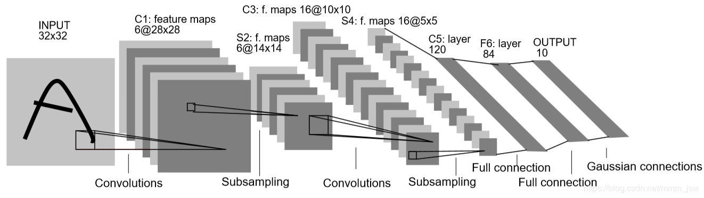
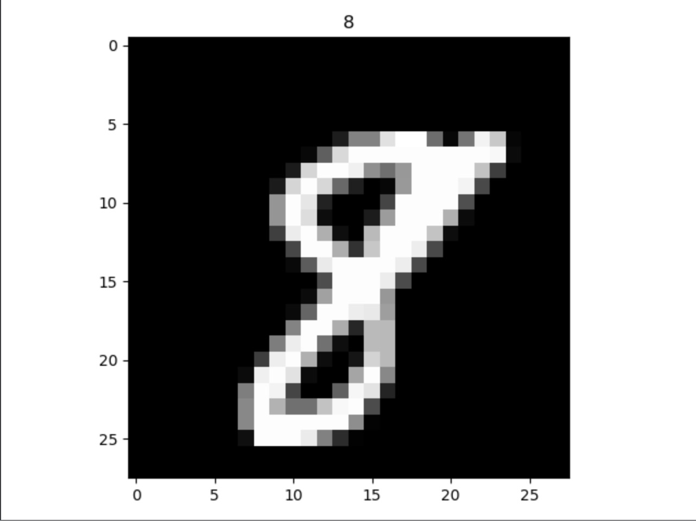

开始学习深度学习，想通过被誉为深度学习”Hello World”的LeNet5进行实践，奈何从网络架构看不懂到最后编码没看懂，到现在的恍然大悟，这里面有很多坑不实践只知道网络结构永远是不够的，在学习编码LeNet5的过程中，遇到了很多坑，从网上找资料，五音不全的，总感觉少了很多东西，所以自己索性就总结了自己LeNet5的经验以及一些坑
网络架构

LeNet5网络结构图
输入的图片是 28281 : 分别表示28像素的高，28像素的宽，1个颜色通道
第一层：卷积层：卷积核大小为6✖️28✖️28, (6表示卷积核的通道数，决定了输出内容的个数，1表示卷积核的通道为1，28)
第二层：池化层
第三层：卷积层
第四层：池化层
第五层：全连接层
第六层：全连接层
第七层：全连接层
数据介绍
实战LeNet5架构的数据已经由大神Yann LeCun备好，只需要通过PyTorch下载并加载就可以
训练集：提供了60000张2828像素的黑白图(说明颜色通道为1)，60000个标签
测试集：提供了10000张2828像素的黑白图，10000个标签

展示其中的一个数据
一些坑
- ReLU() 与 torch.relu() 真的不一样，可别搞混，自己当时就是搞混，以为是一样的，卡了半天
步骤
任何一个神经网络的实践数据收集都是起点，这里我们使用了经典的MNIST数据集，包括60000 个训练样本和 10000 个测试样本，样本大小都是1 ✖️ 28 ✖️ 28 (1是指黑白图，也就是只有1个颜色通道)
- 数据收集
- 数据处理
- 网络搭建
- 针对问题定义损失函数和优化器
- 训练模型
- 测试模型准确度
数据处理和数据收集
PyTorch已经内置了MNIST数据集，因此我们只需要导入相应的包来下载数据集
注意：数据集都是图像，我们在PyTorch中数据的计算都需要将数据转换为计算图的张量(可以理解为是我们现实中的一个常量)
1
2
3
4
5
6
7
8
9
10
11
12
13
14
15
16
17
18
19
20
21
22
23
24
| import torchvision.datasets as datasets
import torchvision.transforms as transforms
from torch.utils.data import dataloader
transform = transforms.Compose([
transforms.ToTensor()
])
train_data = datasets.MNIST(root='./data', train=True, download=True, transform=transform)
test_data = datasets.MNIST(root='./data', train=False, download=True, transform=transform)
train_data_loader = dataloader.DataLoader(train_data, batch_size=BATCH_SIZE, shuffle=True)
test_data_loader = dataloader.DataLoader(test_data, batch_size=BATCH_SIZE, shuffle=True)
|
网络搭建
这里我们自定义了网络结构
1
2
3
4
5
6
7
8
9
10
11
12
13
14
15
16
17
18
19
20
21
22
23
24
25
26
27
28
29
30
| import torch.nn as nn
class MyCNN(nn.Module):
def __init__(self):
super(MyCNN, self).__init__()
self.conv = nn.Sequential(
nn.Conv2d(1, 3, 3, padding=2),
nn.BatchNorm2d(3),
nn.LeakyReLU(0.2),
nn.MaxPool2d(2),
nn.Conv2d(3, 16, 3, padding=1),
nn.BatchNorm2d(16),
nn.LeakyReLU(0.2),
nn.MaxPool2d(2),
nn.Conv2d(16, 32, 3, padding=1),
nn.BatchNorm2d(32),
nn.LeakyReLU(0.2),
nn.MaxPool2d(2),
)
self.lin = nn.Linear(288, 10)
def forward(self, input):
y = self.conv(input)
y = y.view(input.size(0), -1)
y = self.lin(y)
return y
|
定义损失函数和优化器
Adam: 一种计算每个参数的自适应学习率的方法
分类问题常用的损失函数为交叉熵（Cross Entropy Loss。交叉熵描述了两个概率分布之间的距离，交叉熵越小说明两者之间越接近。
1
2
3
|
loss_func = torch.nn.CrossEntropyLoss()
optimizer = torch.optim.Adam(net.parameters(), lr=LEARNING_RATE)
|
训练模型
1
2
3
4
5
6
7
8
9
10
11
12
13
14
15
16
17
18
| index_value = 0
for epoch in range(NUM_EPOCHS):
for index, (data, label) in enumerate(train_data_loader):
predict_label = net(data)
loss = loss_func(predict_label, label)
loss_value = loss.item()
print("epoch:{}, index:{}, loss:{}".format(epoch, index, loss_value))
opt = {
'title': 'LeNet5_loss',
'xlabel': 'index',
'ylabel': 'loss'
}
vis.line(Y=np.array([loss_value]), X=np.array([index_value]), win='lenet5_loss', update='append', opts=opt)
optimizer.zero_grad()
loss.backward()
index_value += 1
optimizer.step()
|
测试模型
几个注意的地方：
- 进行测试的时候一定要关闭求梯度，以及dropout(使用net.eval())
- 训练之后的网络，使用net(data)将会得到预测的输出, 例如在该任务中会输出大小为(batch_size, 10)的二维tensor, 每个batch_size对应的10个数字的可能性大小，数字最大的代表预测为该数字
- 使用net(data).argmax()求得的是二维tensor的最大值，但我们想要的是(batch_size, 10)大小的tensor中每行的最大值对应的下标，因为就是我们预测的值，因此可以采用net(data).argmax(dim=1)
- label == net(data).argmax(dim=1) 来判断是否与我们预测的一致，将会返回一个bool组成的tensor
- (label == net(data).argmax(dim=1)).sum() 可以计算我们预测的有多少是准确的，只是局限在该batch_size下
1
2
3
4
5
6
7
8
9
10
11
12
13
14
15
| with torch.no_grad():
for data, label in test_data_loader:
net.eval()
accur_num = (label == net(data).argmax(dim=1)).sum()
accur_sum += accur_num
n += BATCH_SIZE
print("本轮准确率为：%.6f，累计准确率为：%.6f" % ((accur_num * 1.0/ BATCH_SIZE), (accur_sum * 1.0/ n)))
|
torch.argmax() 详解
1
2
3
4
5
|
m = torch.tensor([[1, 2, 3], [4, 5, 6]])
m.argmax()
m.argmax(dim=0)
m.argmax(dim=1)
|
使用visdom进行可视化
上面训练网络使用了visdom画出损失函数图进行可视化
注意使用vis.line()的时候, Y在前面，X在后面，并且需要将其转换为一维的np.array类型
如果需要在原图上更新，指定参数update=’append’
win指定对应pane的名字
opts采用键值对的形式指定对应可视化pane的一些属性
启动
python -m visdom.server
可视化
1
2
3
4
5
6
7
8
| import visdom
vis = visdom.Visdom()
opt = {
'title': 'LeNet5_loss',
'xlabel': 'index',
'ylabel': 'loss'
}
vis.line(Y=np.array([loss_value]), X=np.array([index_value]), win='lenet5_loss', update='append', opts=opt)
|
References
- 网络架构完全不懂的参考 缺点：后面的几层讲解的不够全面
- visdom可视化
- visdom可视化2
- visdom可视化3

{kind=link}
{kind=link}